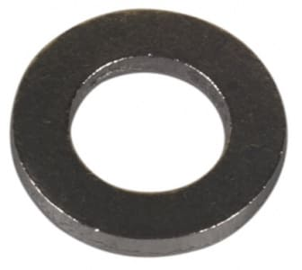

ГОСТ Р 52646-2006 шайба
Стандарт
DIN 93
ГОСТ
ГОСТ 52646-2006
Цена от
2,20 ₽
Размерный ряд
ты от М16 до М48
Шайбы металлические, кольца » ГОСТ Р 52646-2006 шайбы высокопрочные
Варианты и размеры (10)
| Наименование | Размер | Длина, мм | Материал | Покрытие | Цена |
|---|---|---|---|---|---|
| ГОСТ Р 52646-2006 шайба M16 L=18мм | M16 | 18 | 4,50 ₽ | ||
| ГОСТ Р 52646-2006 шайба M18 L=20мм | M18 | 20 | 5,00 ₽ | ||
| ГОСТ Р 52646-2006 шайба M20 L=22мм | M20 | 22 | 5,60 ₽ | ||
| ГОСТ Р 52646-2006 шайба M22 L=24мм | M22 | 24 | 6,20 ₽ | ||
| ГОСТ Р 52646-2006 шайба M24 L=26мм | M24 | 26 | 6,80 ₽ | ||
| ГОСТ Р 52646-2006 шайба M27 L=30мм | M27 | 30 | 7,80 ₽ | ||
| ГОСТ Р 52646-2006 шайба M30 L=33мм | M30 | 33 | 8,80 ₽ | ||
| ГОСТ Р 52646-2006 шайба M36 L=39мм | M36 | 39 | 11,00 ₽ | ||
| ГОСТ Р 52646-2006 шайба M42 L=46мм | M42 | 46 | 13,50 ₽ | ||
| ГОСТ Р 52646-2006 шайба M48 L=52мм | M48 | 52 | 16,00 ₽ |